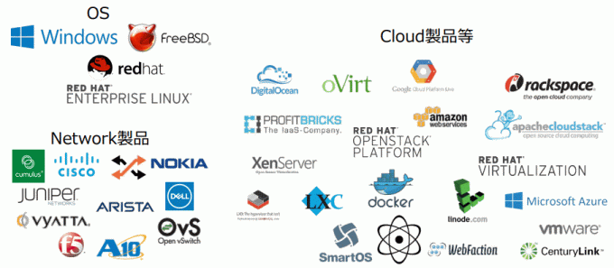
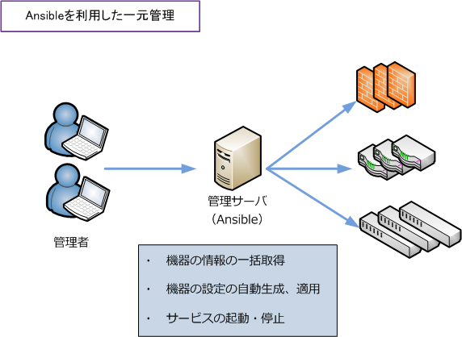
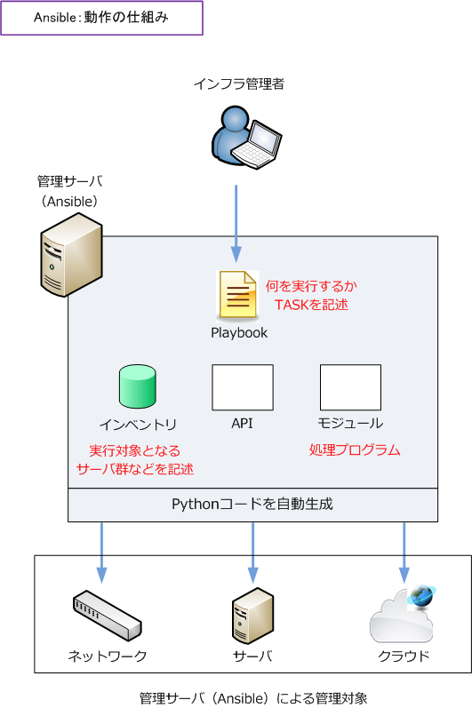
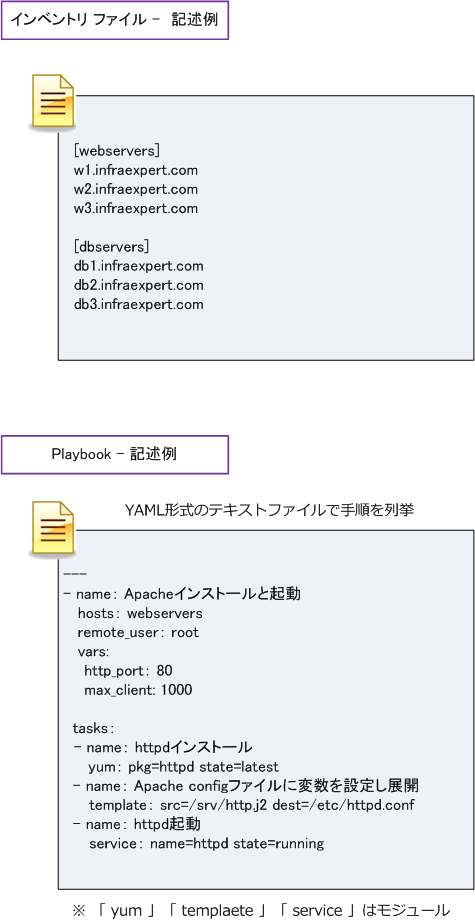

Ansible / Puppet / Chef
ネットワーク自動化 - 構成管理ツールとは
構成管理ツールとは、多くのサーバに対してあらかじめ用意した設定ファイルに従い、ソフトウェアの インストールや、設定を自動的に実行できるツールのことです。代表的な構成管理ツールにRedHat社が 開発するオープンソースのAnsibleがあります。Ansible以外にも、PuppetやChefなどがあります。
構成管理ツールは、サーバだけでなく、ネットワークが自動化された大規模ネットワークインフラでは ネットワーク機器に対しても活用されています。Ansibleでは、以下のサーバーOS、ネットワーク製品、 クラウド製品を管理できます。Cisco、Juniper、F5、A10、ARISTA、NOKIAなどにも対応しています。

構成管理ツール - 導入のメリット
構成管理ツールを使用しない場合、設定・管理対象のネットワーク機器ごとに、ログインしコマンドを 実行し、設定ファイルの更新、管理を行う必要があります。 一方、構成管理ツールを使用する場合には 一元的に集中管理できます。管理サーバにAnsibleをインストールすれば、各ネットワーク機器の設定や 起動状態などを一元的に管理できます。

構成管理ツールを導入することにより構成ドリフトを抑制できるメリットもあります。構成ドリフトは 手順が正しく従わなかったり、適切に実装されなかったりした場合に発生します。
構成管理ツールを導入することによって、手順書管理の手動オペレーションを自動化し安全で効率的な システム構成を管理できるようになり、構成ドリフトが発生しにくいネットワークシステムとなります。
Ansibleとは
Ansible（アンジブル）は、Red Hat社が開発するオープンソースの構成管理ツールです。Ansibleには、 構成管理ツールを含めて、正確には大きく以下の機能があります。
・ 構成管理ツール ・ デプロイメントツール ・ オーケストレーションツール
Ansibleはデプロイメントツールとして、サーバ上に任意のファイルをデプロイしたり、パッケージの インストールを行わせる機能もあります。また、オーケストレーションツールとしてシステム、アプリ、 サービスの設定・運用管理を自動化する機能もあります。
Ansible - 3つの特長
Ansibleには大きく以下の3つの特徴があります。
・ エージェントレス ・ モジュールによる拡張性の高さ ・ 後発製品であるため、従来の構成管理ツールの問題点を克服
Ansibleの管理対象のサーバやネットワーク機器に、エージェントツールのインストールは不要であり、 エージェントレスモデルを採用しています。Ansibleには、管理対象となるサーバ、ネットワーク機器、 サービスごとに様々なモジュールが用意されており、サービス起動・停止行うモジュール、iptablesの ファイアウォール設定するモジュール、クラウドインフラを制御するAnsibleモジュールなどがあります。
Ansibleは従来の構成管理ツールで手順を記述する際に求められてたプログラミングの知識は不要であり YAML形式のテキストファイルで手順を列挙するだけで良い利点もあります。
Ansible - 仕組み
AnsibleではPlaybookと呼ばれるファイルを元に、AnsibleサーバがPython codeの生成後に管理対象 となるサーバやネットワーク機器に転送して、SSHやNETCONFなどのプロトコル経由で実行します。

Ansibleを動作させる上で最も重要なファイル（コード）は以下の2つとなります。
| Ansibleを動作させるコード | 説明 |
|---|---|
| Playbook（プレイブック） | 管理対象となる対象デバイスやAnsibleが実行するタスクを記述するファイル |
| Inventory（インベントリ） | 管理対象の役割とホスト情報を記述するファイル |

構成管理ツール：Ansible、Puppet、Chefの比較
Ansibleの場合、構成管理サーバから管理対象のデバイス（サーバやネットワーク機器）へ設定情報を 送信するPush型（プッシュ型）の通信形態となりますが、PuppetとChefでは、構成管理サーバから 設定情報を取得するPull型（プル型）の通信形態となります。
Ansibleは、構成管理の対象デバイスにソフトウェアのインストールする必要がないエージェントレス モデルを採用しています。一方、PuppetとChefは、構成管理対象の対象デバイスに別途ソフトウェア のインストールが必要となるエージェントモデルを採用しています。その他の違いは以下の通りです。
| 比較項目 | Ansible | Puppet | Chef |
|---|---|---|---|
| 開発組織 | RedHat | Puppet Labs | Chef Software |
| 使用言語 | Python | Ruby | Ruby |
| アーキテクチャ | エージェントレス | エージェント | エージェント |
| 構成管理方法 | Push型通信 | Pull型通信 | Pull型通信 |
| 制御ファイル | playbook | manifest | Recipe |
| コード記述言語 | YAML | 独自言語 | Ruby |
| 使用プロトコル | SSH/NETCONF | HTTP/HTTPS | HTTP/HTTPS |
| サーバ側待ち受けポート | - | TCP 8140 | TCP 10002 |